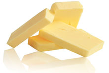
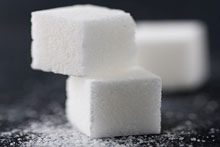
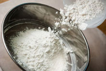
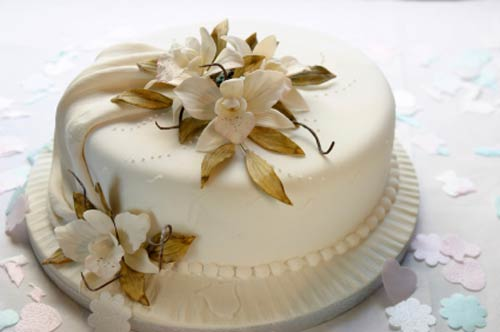
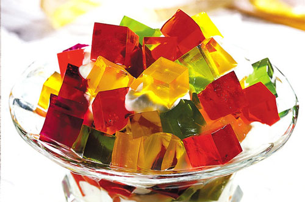
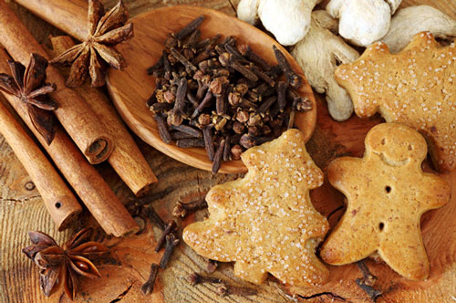

<!DOCTYPE html>

<html lang="en">
<head>
	<meta http-equiv="Content-Type" content="text/html; charset=UTF-8">
	<meta charset="utf-8">
	<meta name="viewport" content="width=device-width, initial-scale=1">
	<meta name="description" content="">
	<meta name="author" content="">
	<link rel="icon" href="img/favicon.ico">
	<title>Aris Bakery WebSite</title>
	
	<!-- Bootstrap core CSS -->
	<link href="assets/css/bootstrap.min.css" rel="stylesheet">
	
	<!-- Font Awesome Icons -->
	<link href="assets/css/font-awesome/css/font-awesome.min.css" rel="stylesheet">
	
	<!-- Custom CSS -->
	<link href="assets/css/custom.css" rel="stylesheet">
	
	<!-- Google Fonts -->
	<link href='http://fonts.googleapis.com/css?family=Raleway:400,700' rel='stylesheet' type='text/css'>
	
	<!-- HTML5 shiv and Respond.js IE8 support of HTML5 elements and media queries -->
	<!--[if lt IE 9]>
	<script src="https://oss.maxcdn.com/html5shiv/3.7.2/html5shiv.min.js"></script>
	<script src="https://oss.maxcdn.com/respond/1.4.2/respond.min.js"></script>
	<![endif]-->

</head>
<body>
	
	<!-- HEADER
	================================================== -->
	<header class="site-header" role="banner">
		
	
	<!-- NAVBAR
	================================================== -->
		<div class="navbar-wrapper">
			<div class="navbar navbar-inverse navbar-fixed-top" role="navigation">
				<div class="container">
					<div class="navbar-header">
						<button type="button" class="navbar-toggle" data-toggle="collapse" data-target=".navbar-collapse">
							<span class="sr-only">Toggle navigation</span>
							<span class="icon-bar"></span>
							<span class="icon-bar"></span>
							<span class="icon-bar"></span>
						</button>
							<a class="navbar-brand" href="index.html">ARIS BAKERY</a>
					</div>
					<div class="navbar-collapse collapse">
						<ul class="nav navbar-nav navbar-right">
							<li><a href="index.html">HOME</a></li>
							<li><a href="pasteles.html">PASTELES</a></li>
							<li><a href="gelatinas.html">GELATINAS</a></li>
							<li><a href="galletas.html">GALLETAS</a></li>
							<li  class="dropdown">
							<a href="english.html" data-toggle="dropdown" class="dropdown-toggle">ENGLISH<b class="caret"></b></a>
							<ul class="dropdown-menu ">
							<li><a href="cakes.html">CAKES</a></li>
							<li><a href="gelatine.html">GELATINE</a></li>
							<li class="divider"></li>
							<li><a href="cookies.html">COOKIES</a></li>
							</ul>
							<li><a href="galeria.html">GALERIA</a></li>
							
							<li><a href="contact.html">CONTACT</a></li>
						</ul>
					</div>
				</div>
			</div>
		</div>
	</header>
	
	
	<!-- HISTORY
	================================================== -->
		<section id="feature-two">
			<div class="container">
				<div class="section-header">
					<h1>OUR GREAT HISTORY</h1>
				</div><!-- section-header -->
					<hr>
					<P class="lead "> Lo que nacio de una inquietud, de un gusto oh quiza de un antojo se convirtio en un oficio...<br>
					<div style="height: 15px;"></div><!--spacer-->
Aproximadamente  hace  15  ańos  nuestra  fundadora  Edith  atraida  por  la  inquietud  de  elaborar  un  pastel  de  3  leches  y
tartaletas de queso con frutas, inicio su travesia Pastelera. Desde ese momento la gente comenzaba a pedirle dicho pastel.<br>
<div style="height: 15px;"></div><!--spacer-->
Aunque  con  defectos  de  elaboración  y  diseńo,  el  sabor  quedo  marcado  y  definio  el  talento  mismo. Para  este  entonces  Aris  
Bakery no era fundada. Edith elaboraba "El 3 leches" solo para ciertas ocasiones y uno que otro encargo.<br>
<div style="height: 15px;"></div><!--spacer-->
Fue despues alrededor del ańo 2010 donde Edith comenzo a refinar sus tecnicas y a estudiar el arte de la pasteleria. 
Siempre manteniendo ese amor,pasion y calidad en cada pastel. Despues tomando en cuenta ya el fruto de esto se funda "Aris 
Bakery"  Aris  en  honor  a  su  padre  Aristeo  quien  fue  siempre  inspiracion y fuersa  para  seguir adelante.  Hoy  en  dia  Aris  Bakery  se  
destaca por mantener una calidad totalmente casera y ala vez profesional  que satisface el paladar de cada nińo y adulto con 
una amplia cartelera de clientes satisfechos. Aris Bakery ofrese desde una galleta hasta una "sweet table" un cup cake hasta un 
pastel de fondant con diseńo imaginario multinivel. El slogan Marco como Aris Bakery "una deliciosa tradicion"</P>
            </div>
        </section>
           
    
    <!-- MADE WITH LOVE
	================================================== -->
        <section id="project-features">
			<div class="container">
				<div class="section-header">
					<h1>MADE WITH LOVE AT HOME</h1>
				<div style="height: 10px;"></div><!--spacer-->
				</div><!-- section-header -->
				<hr>
				
				<div style="height: 10px;"></div><!--spacer-->
            		<div class="container">
                		<div class="row">
                    		<div class="col-md-3  text-xs-center">
                        		<div class="service-box">
								
								<div style="height: 10px;"></div><!--spacer-->
								<h4>ORGANIC</h4>
								<p1 class="text-muted"> </p1>
                        	</div>
                    	</div>
                    	
                    <div class="col-md-3  text-xs-center">
                        <div class="service-box">
                            
                            <div style="height: 10px;"></div><!--spacer-->
                            <h4>TRADITIONAL</h4>
                            <p1 class="text-muted"></p1>
                        </div>
                    </div>
                    
                    <div class="col-md-3  text-xs-center">
                        <div class="service-box">
                            
                            <div style="height: 10px;"></div><!--spacer-->
							<h4>LOW IN SUGAR</h4>
                            <p1 class="text-muted"></p1>
						</div>
                    </div>
                    
                    <div class="col-md-3  text-xs-center">
                        <div class="service-box">
                            
                            <div style="height: 10px;"></div><!--spacer-->
							<h4>WITHOUT GLUTEN</h4>
                            <p1 class="text-muted"></p1>
						</div>
                    </div>
                </div> <!-- end row -->
            </div> <!-- end container -->
        </section> <!-- end homemade section -->
        
    
    <!-- OUR MENU
	================================================== -->
		<section id="feature-two">
			<div class="container">
				<div class="section-header">
					<div style="height: 0px;"></div><!--spacer-->
					<h1>OUR FABULOUS MENU</h1>
				</div><!-- section-header -->
				<hr>
				<div style="height: 20px;"></div><!--spacer-->
				
				<div class="container">
					<div class="row">
						<div class="col-md-4 text-xs-center">
                        	<div class="service-box">
                            	
								<div style="height: 20px;"></div><!--spacer-->
								<h4>CAKES</h4>
							</div>
                    	</div>
                    	
						<div class="col-md-4 text-xs-center">
                        	<div class="service-box">
                            	
								<div style="height: 20px;"></div><!--spacer-->
								<h4>GELATINS</h4>
							</div>
                    	</div>
                    	
						<div class="col-md-4 text-xs-center">
                        	<div class="service-box">
                            	
								<div style="height: 20px;"></div><!--spacer-->
								<h4>COOKIES</h4>
							</div>
                    	</div>
              		</div> <!-- end row -->
            	</div> <!-- end container -->
			</div>
		</section>
	
	
	<!-- FOOTER
	================================================== -->
	<footer>
		<div class="container">
			<div class="col-sm-3">
				<p><a href="index.html">ARIS BAKERY</a>
			</div><!-- end col -->
			<div class="col-sm-6">
				<nav>
					<ul class="list-unstyled list-inline">
						<li><a href="index.html">Home</a></li>
						<li><a href="pasteles.html">Pasteles</a></li>
						<li><a href="gelatinas.html">Gelatinas</a></li>
						<li><a href="galletas.html">Galletas</a></li>
						<li><a href="english.html">English</a></li>
						<li><a href="contact.html">Contact</a></li>
					</ul>
				</nav>
			</div><!-- end col -->
			<div class="col-sm-3">
				<p class="pull-right">&copy; 2016 Aris Bakery</p>
			</div><!-- end col -->
		</div><!-- container -->
	</footer>


<!-- Bootstrap core JavaScript
    ================================================== -->
    <!-- Placed at the end of the document so the pages load faster -->
    <script src="//ajax.googleapis.com/ajax/libs/jquery/1.11.1/jquery.min.js"></script>
    <script src="assets/js/jquery-2.1.1.min.js"></script>
    <script src="assets/js/bootstrap.min.js"></script>
    <script src="assets/js/main.js"></script>
    <script type="text/javascript" src="//use.typekit.net/gla7wnd.js"></script>
	<script type="text/javascript">try{Typekit.load();}catch(e){}</script>
  
</body>
</html>
